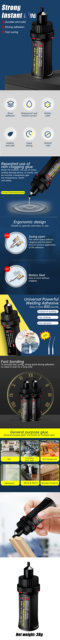

Specification:
Product Name: Universal Super Strong Glue
Glue Type: Quick-drying Super Glue
quantity:1/2/3/4/5/6/10pcs
Suitable for: Metal, Wood, Glass, Ceramics, Plastics, etc.
Feature:
1. Rubber Toughening: The most durable superglue formula for waterproofing, impact, shock and vibration resistant materials for everyday use and harsh conditions.
2. No Drip or Run: No-mess formula is ideal for vertical applications and does not drip or run.
3. Maximum Control: Features a patented easy side-squeeze bottle design for maximum control and pinpoint accuracy and application.
4. Versatile: Works well on a variety of porous and non-porous surfaces including leather, china, wood, rubber, metal, paper, ceramic, hard plastics and more.
5. Invisible Repairs: Super glue gel formula sets without clamping and dries transparent for office, home, hobby, and crafting projects.
Notes:
Due to the effect of the monitor and light, the actual color of the item may be slightly different from the color shown in the picture. Please understand!
Please allow 1-2 cm measurement deviation due to manual measurement.
